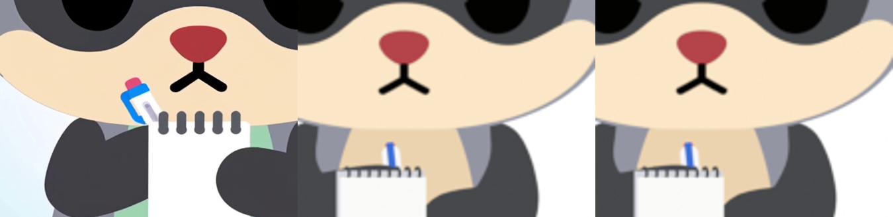
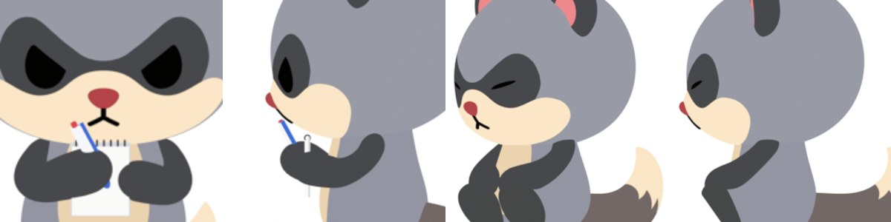

AI で生成した参照動画（SSOT）を計測して、chibi Mozu の native 3D rig に当てはめた2つのループです。v3 では腕の rig を作り直しました。腕はどの向きから見てもデフォルトと同じ太さ・長さを保ち、二の腕は体の横に下がって、肘でやわらかく曲がります。瞑想の SSOT は、あなたが選んだ腕のポーズ（V4）から生成し、⑤と⑦を選んでいただきました。
座布団に座って目を閉じ、二の腕を体の横に下ろして、手をおなかの左右に添えます。5 秒のあいだに2回、ゆっくり息を吸うたびに首がふっと上がります。しっぽは動かしません。比較動画は左から SSOT ⑤（正面）、SSOT ⑦（斜め）、native の正面・斜め・側面です。
v3 では正面から見ると手が膝と同じ色でつながって見えるため、手の位置だけを 0.10 上げて、おなかの横に添えた形にしました（それ以外の動きは v3 と完全に同じです）。手と膝のあいだのくびれがはっきりし、手が手として読めるようになります。その代わり、手を膝の近くに置いている SSOT ⑤ からは少し離れた見た目になります（正面の形の一致度 0.98 → 0.88）。どちらも検査と別レビュアーの確認に合格しているので、お好みで選んでください。
配置 B にしました。メモ帳は顔の前に持ち上げてページを正面へ向け、ペンを持つ手はメモ帳と胸のあいだから裏側に書きます。書くあいだのペンは SSOT より約 40° 寝かせ、メモ帳の左端から頬の横へ出しています。SSOT と同じ角度だとペンの上端がマズルの中に入ってしまうためです。休む場面では SSOT と同じ角度に戻り、顔を上げてにっこりします。比較動画は左から SSOT、native の正面・斜め・側面です。
動きはフレームごとの当てはめをやめ、パーツの意味から組み立てています。メモ帳は向きを固定して持ち、「書く」「休む」の2つの構えのあいだをなめらかに一方向で移ります。ペンは手に固定し、書く動きは手のゆったりしたストローク（約 1.6 Hz と 0.9 Hz）です。にっこりは SSOT と同じタイミングで一度ほほえんで戻ります。
3D リグを使わず、SSOT 動画をそのまま正面の 2D アニメーションにしたものです。背景を透明に抜き、色を正式な配色（耳・手足・しっぽ＝濃いグレー、お腹＝ベージュ）に置き換えています。今回、しっぽの先に正式デザインのクリーム色のギザギザ（3 つの山）を描き足しました。形は Chibi の正式デザインと同じで、クリーム部分はしっぽの長さの約 4 割です。しっぽが揺れたり曲がったりしても、ギザギザはしっぽに沿ってついていきます。顔・ペン・メモ帳の色と動きは SSOT のままです。4 秒・24fps のループです。
気になる点：しっぽの輪郭にごく細い青緑のふちが残るコマがあります（背景を抜く段階由来。拡大しないと見えない程度）。
ご指摘を受けて書き方を作り直した試作です。書くあいだはペンをほぼ垂直に立て、ペン先はページの中央付近（幅の 32〜64%）に当て、腕ごとペンを左右に平行に動かして書きます（約 1.2 Hz、右に行くとき手首のように少し傾く）。書くときにメモ帳を持ち上げ、にっこりするときに下ろします。口元とぶつからないよう、メモ帳は書く手の側へ 25° 向け、SSOT より低い位置に持っています。比較動画は左から SSOT、native の正面・斜め・側面です。

判断待ち：①このまま採用 ②ペンを SSOT の比率まで太くする（おすすめ）③メモ帳とペンを口元まで上げる ④組み立て方を変える（メモ帳をキャラクター側に傾ける）⑤ v4 に戻す。

長さが一定の腕を、肩から手の目標位置まで「二の腕＋やわらかい肘＋前腕」の曲線でつなぎます。初期状態は従来の腕と完全に一致し、歩行など既存の動きは1バイトも変わりません。paw T（手の位置）、swivel（肘の向き）、shoulder sigma（肩の前出し）などで操作します。
白い縦長のメモ帳（0.44 × 0.55）、上端に8個のリング。右手の手首の向きに付いて動きます。
長さ 0.66。白い軸、青いグリップと長いクリップ、赤いノック。先端から 35% の位置を左手で持ちます。